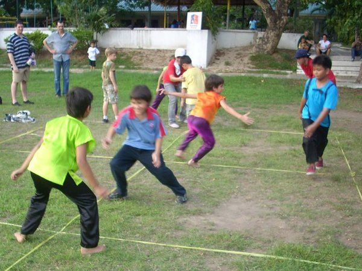

Ang Patintero ay isang larong Pinoy kung saan kailangang tumawid ang
mga manlalaro sa mga linyang binabantayan ng mga taya nang hindi nahuhuli upang makakuha ng
puntos.
Patintero
6–10 players, two teams